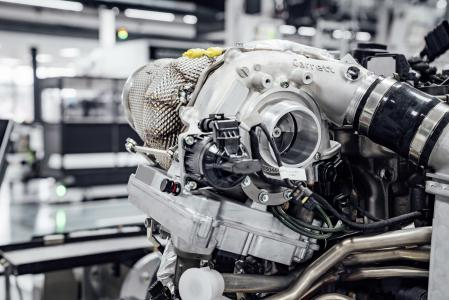
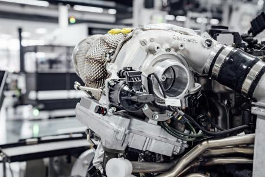

La Fórmula 1, también conocida como F1, es la competencia de automovilismo más prestigiosa y rápida del mundo, que ha evolucionado desde sus orígenes en las carreras de Gran Premio de Europa en la década de 1920 y 1930. La categoría moderna de F1 fue formalmente establecida en 1950 por la Federación Internacional del Automóvil (FIA), organismo que aún la regula.
¿Cómo comenzó la Fórmula 1? La idea de la F1 como una competición mundial tomó forma después de la Segunda Guerra Mundial, en un momento en que se reorganizaron muchas instituciones deportivas en Europa. La primera temporada oficial de la F1 se llevó a cabo en 1950, comenzando con el Gran Premio de Gran Bretaña en Silverstone. En esa temporada inaugural, Giuseppe Farina, piloto de Alfa Romeo, se coronó campeón del mundo.
 

¿Quién fundó la Fórmula 1? Aunque no hubo un único fundador, el campeonato fue organizado y lanzado por la FIA (entonces conocida como Asociación Internacional de Automóviles Reconocidos). La FIA trabajó con equipos y pilotos para establecer un conjunto de reglas y estándares de seguridad.
Innovación y tecnología La Fórmula 1 es también un laboratorio de innovación. Cada equipo trabaja intensamente en el diseño de sus autos para maximizar su rendimiento, desde aerodinámica hasta tecnología de materiales. Los avances desarrollados en la F1 muchas veces han terminado aplicándose en autos de producción masiva.

Pilotos legendarios A lo largo de los años, muchos pilotos legendarios han marcado hitos en la F1. Nombres como Juan Manuel Fangio, Ayrton Senna, Michael Schumacher y Lewis Hamilton se destacan por sus impresionantes habilidades y récords.
Curiosidades: La F1 es la categoría de carreras de mayor velocidad y exigencia técnica. El campeonato de F1 se lleva a cabo en circuitos icónicos en todo el mundo.